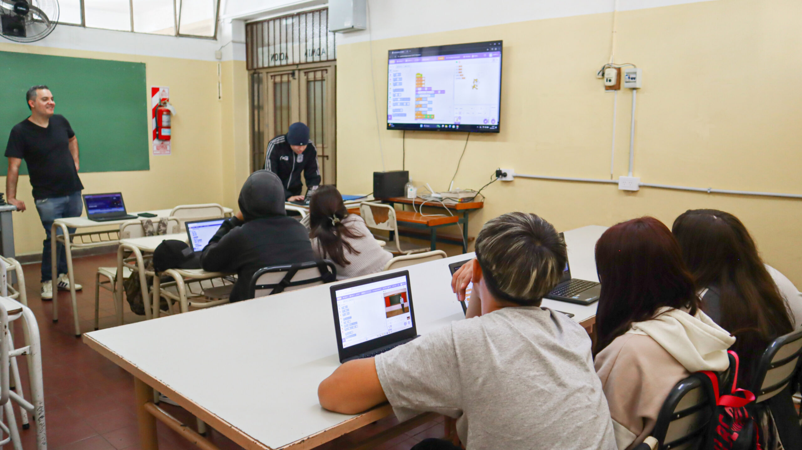

PROGRAMA EDUCATIVO
Un programa de alfabetización digital que acerca herramientas tecnológicas a comunidades con menor acceso educativo.
SOBRE EL PROGRAMA
“Conectados al Futuro” nació para reducir la brecha digital en comunidades vulnerables de América Latina.
A través de talleres y acompañamiento, enseñamos desde el uso básico de computadoras hasta herramientas digitales necesarias para estudiar, trabajar y comunicarse.

IMPACTO DEL PROGRAMA
Beneficiarios directos
Países activos
Talleres realizados
Continuó estudiando
CÓMO FUNCIONA
Detectamos comunidades con menor acceso a herramientas tecnológicas.
Creamos espacios educativos accesibles acompañados por voluntarios.
Enseñamos habilidades digitales aplicables al estudio y al trabajo.
Realizamos seguimiento personalizado para asegurar continuidad educativa.
Con tu ayuda podemos seguir acercando educación digital a más personas.
Sumate al proyecto